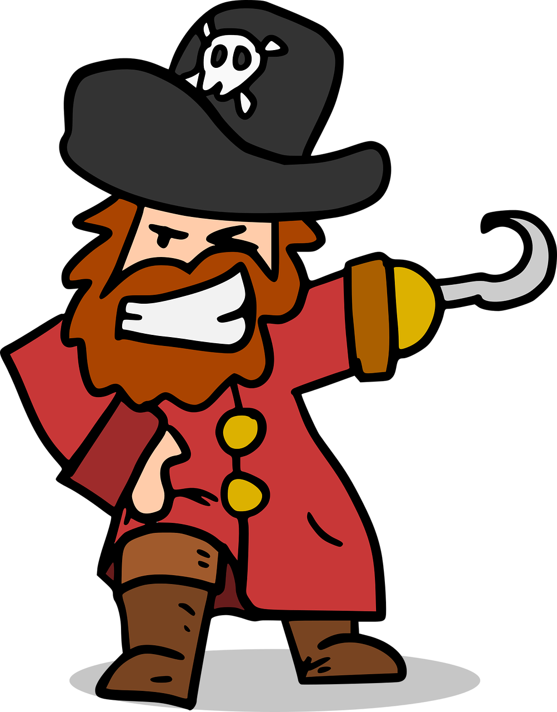

ICPC World Finals 2021 · Problem C
After sailing the Seven Seas and raiding many ships, Cap’n Red and his crew of fellow pirates are finally ready to divide their loot. According to ancient traditions, the crew stands in a circle ordered by a strict pirate hierarchy. Cap’n Red starts by taking a fraction f of the loot and passing the remainder on to the next pirate. That pirate takes the same fraction f of the loot left over by the previous pirate and passes the remainder on to the following pirate. Each pirate behaves in the same way, taking a fraction f of what is left and passing on the rest. The last pirate in the hierarchy passes the remainder on to Cap’n Red, who starts another round of this “fair” division, and so on, indefinitely.
Fortunately, pirates in the 21st century can use a computer to avoid this lengthy process and constant nitpicking when the fraction f does not exactly divide the loot at some step. You have been captured by the pirates and asked to come up with a suitable fraction f. As an incentive, Cap’n Red has promised to leave you alive if you succeed.

The fraction f needs to be a rational number strictly between 0 and 1. It is not necessary that f exactly divides the loot remaining at any step of the round-robin process described above. However, the total loot that would be assigned to each pirate by carrying out this process infinitely needs to be an integer.
The input contains one line with two integers n and m, where n (6 ≤ n ≤ 106) is the number of pirates including Cap’n Red and m (1 ≤ m ≤ 1018) is the total value of their loot.
Output one line with two positive integers p and q, where f = p/q as specified above. If there are multiple suitable fractions, choose one with the smallest q. Among multiple suitable fractions with the same smallest q choose the one with the smallest p. If there is no suitable fraction, output impossible instead and hope for mercy.
8 51000
1 2
6 91000
2 3
10 1000000000000000000
impossible